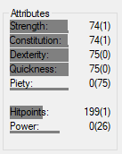

Status values

The status values gained by items are displayed here.
Only the values concerning the player are displayed at a time. With a gunsmith or warrior no manapool or intelligence, as they do not possess these values.
Behind each value are 2 numbers each.
The first is the absolute value. In the bracket is the distance to the respective cap. Values less than 0 have no further effect on the player and are therefore red.
A small graphic represents this once again. The thick gray beam represents the current value due to its length. The thin bar below represents the current cap.
Gray values here are the cap through the player level, white the increase due to racial resistances, and green the increase due to an object.